The Dragon is an ancient myth and legend in China and other East Asian countries. The Dragon is one of the most representative traditional cultures of The Han nationality and other East Asian nations. Dragon legends and other Dragon cultures are various. In China, the Dragon is the sacred representative, people believe that the dragon can play the role of dispelling evil, avoiding disasters, and blessing. Dragon ball is one of the most common property we see with the Dragons. It shows the playful side of the dragon. I chose the theme Dragon And Pearl, not only because it represents Chinese culture, but also because it is a familiar and intimate scene in my daily life. Because in China, people's love for dragons is very strong. People will put them in public places or homes as decorations, fountains, sculptures, etc., the dragon can be said to be one of the most common phenomena in Chinese people's lives. In modern times, dragon playing with pearls means auspiciousness, wealth and power in one, so I think it is a good wish.
Link to Thingiverse
Andy: In a world where Lava was edible.
Erika: We can shoot fire from our mouth as a weapon, transforming energy in the stomach. Blackhole in stomach to stow lava energy.
Mengshi: Humans can rebuild organs, hands ect.
Steve: Food cooks in your stomach
Erika: What if apes never evolved into humans
Andy: If would be planet of the apes, they would be doing everything humans do except they still look like apes.
Mengshi: Dinosaurs would roam the planet.
Mengshi: In a world where humans can be a weapon.
Andy: World war all the time, since everyone can be a weapon.
Erika: No more humans, another creature can dominate the earth, fish could rule the world. Two legged fish. Walking whales
Ideas for Lava
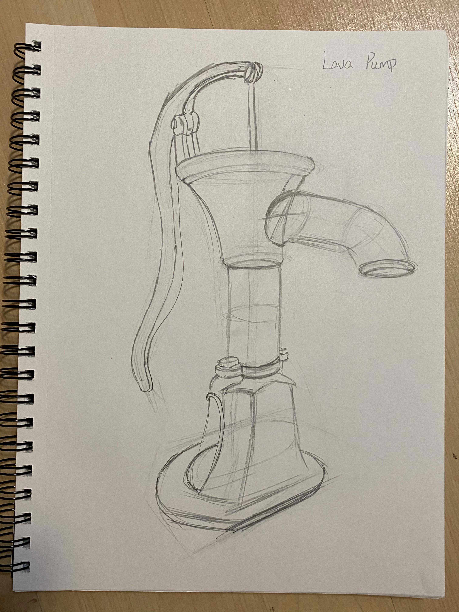 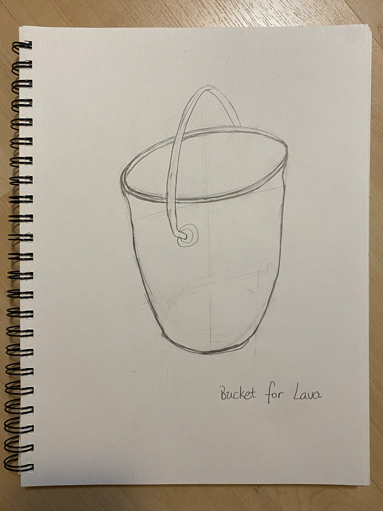Those two are the set that I came out with the Lava idea. The Lava Pump can connect with the volcano in order to pump out lava. The bucket I came up with it because people need a container to collect lava.
Ideas for Apes
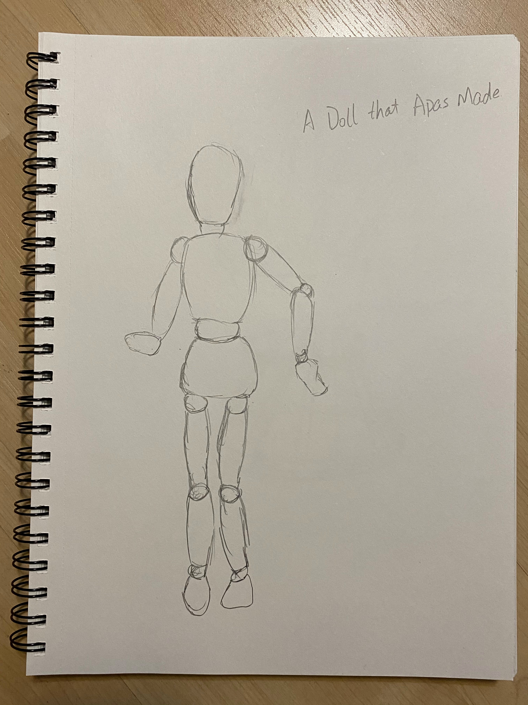 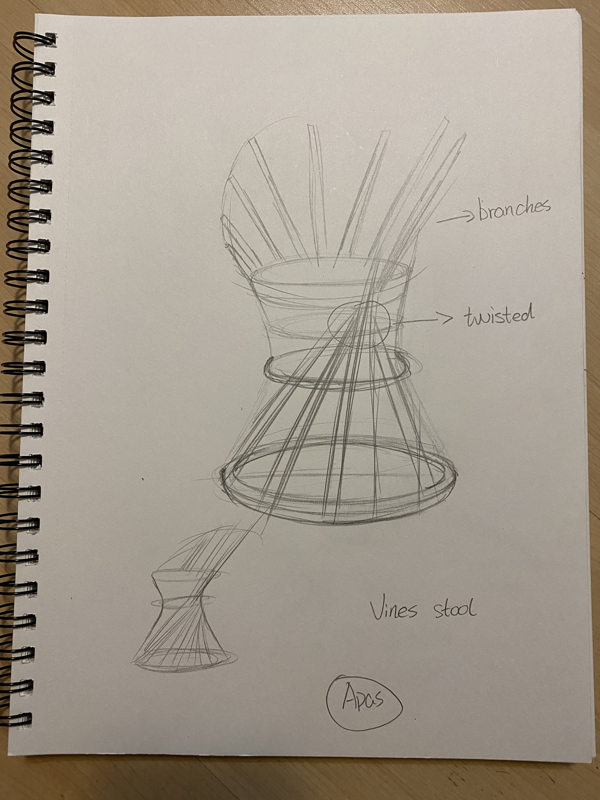When apes in charge the world, would human become dolls for apes? So I came out with a human doll for apes. And the apes would use natural materials to make furnitures. So I imagined that apes use tree parts to create a stool.
Ideas for Human weapon
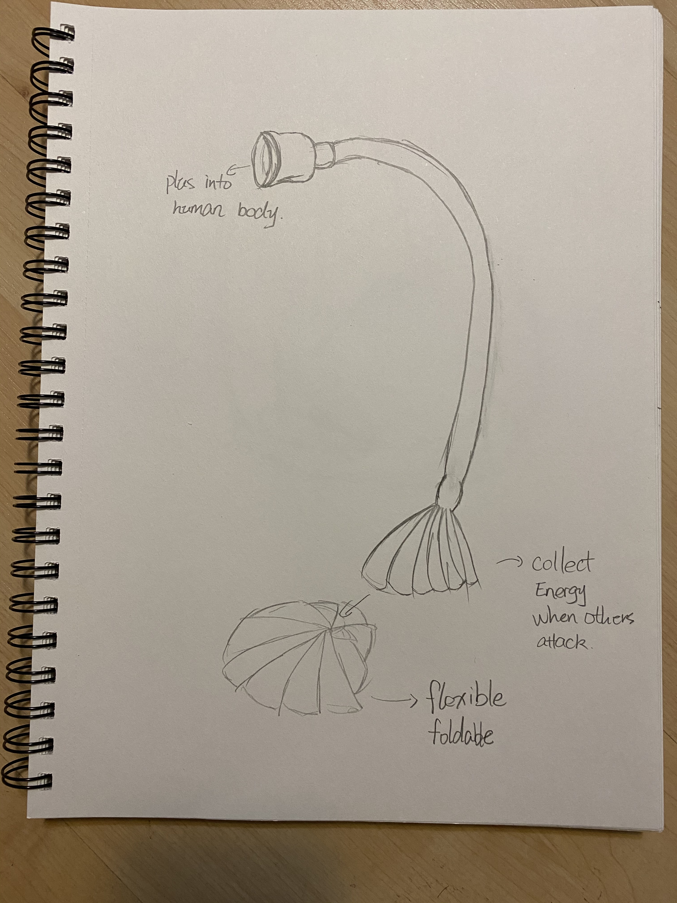 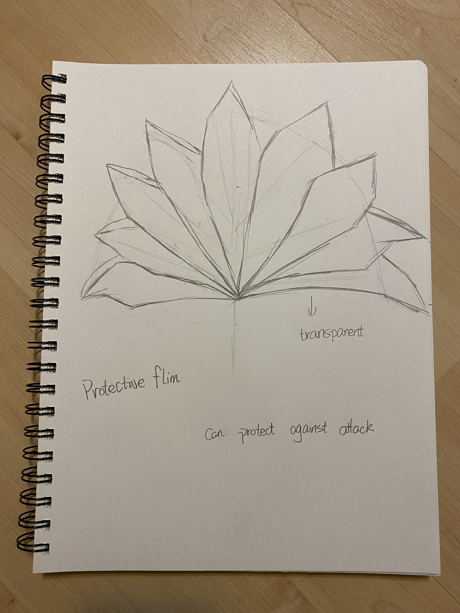When human can be a weapon, how they can protect from each other and how they can get energies from? So I create the plus for human that can input into the body part and collect the energy from others. The protective flim can protect human from being attacted.
One day, the witch saw the earth from the crystal ball. Two thousand years later, humans start a nuclear war. they are reflected by the radiation of the nuclear radiation. At the same time, the radiation impacts gene disorders within the groups, many people can’t digest the good and get the nutritions from a normal diet. Following with the radiation, illness, ecosystem destruction, and others simultaneously happen in lands, thus there is not place safe and the clean source. After many years, people accidentally find out some elements from the lava can slow or smooth the genetic disorders through their innovative technology. At the beginning, people rely on lava boosters to heal gene disorders, but their fear of death pushes them to believe that new belif lava is powerful. People start to make more convenient and effective products to care about their health, and totally replace the previous diets. Finally, lava becomes essential needs in life. Commercial research groups, business medical teams, and governments develop improvements of lava’ mining, refining, manufacturing, marketing strategies, and entertainment. Because humans survive by lava, they also built many monuments or souvenirs of local volcano remarks. They also create a lot of products for healthy enjoyment such as artificial intelligent and environment friendly lava toilets. It is an absolutely luxury version. This is a new era, lava has become everywhere. even the drinking fountain is made for providing lava water in public places. You also can make lava candy at home by using a homemade machine and lava paste.
Cura
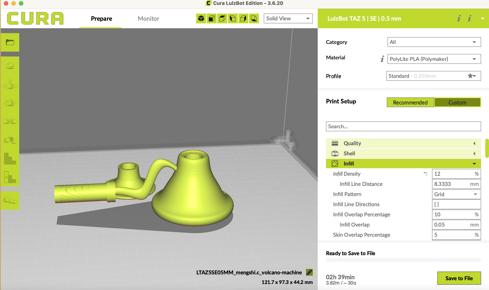Render
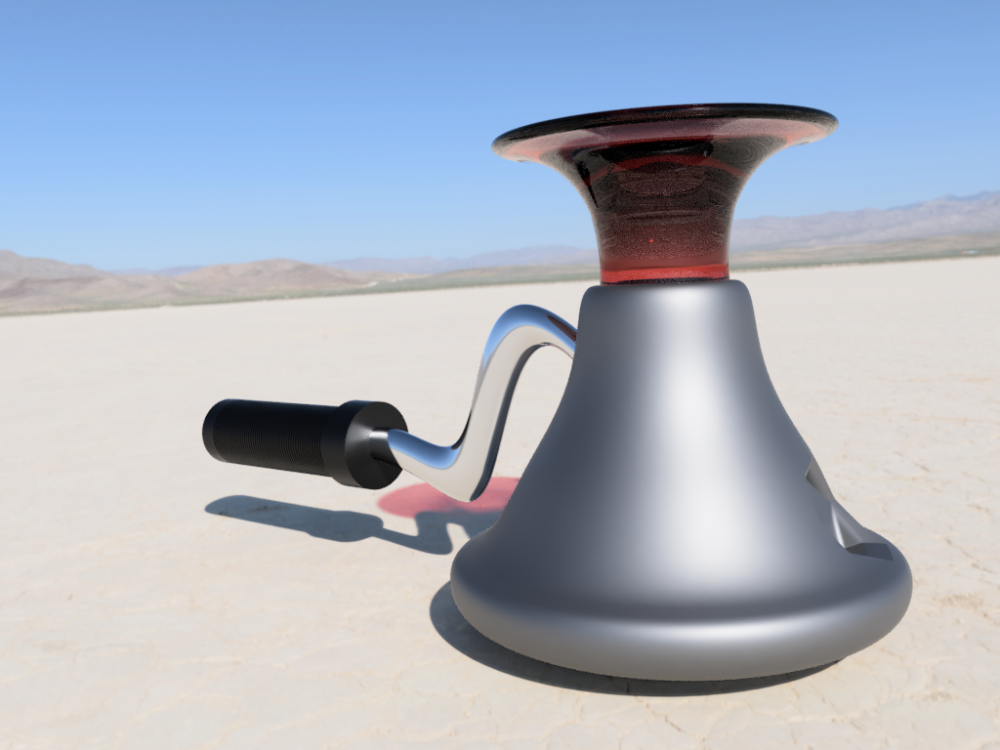 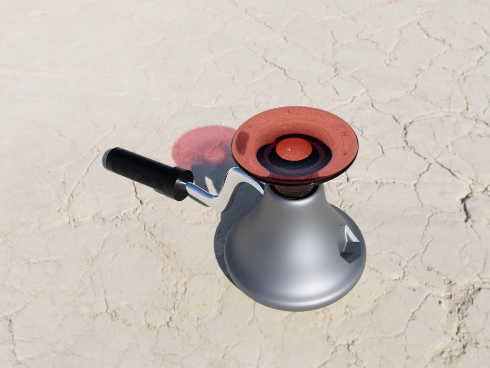 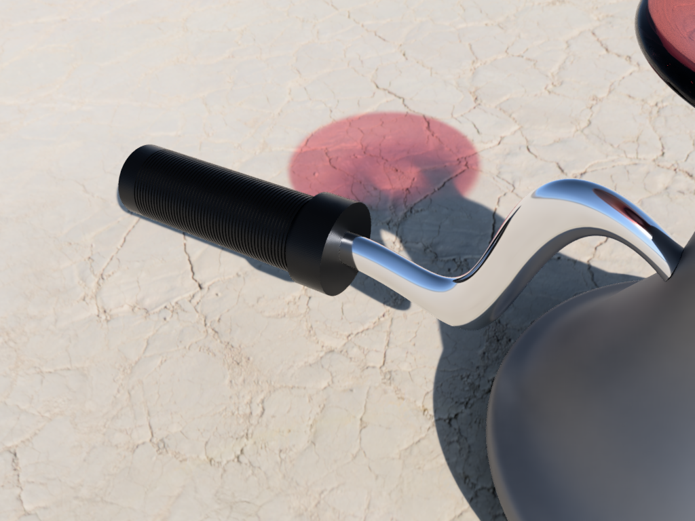 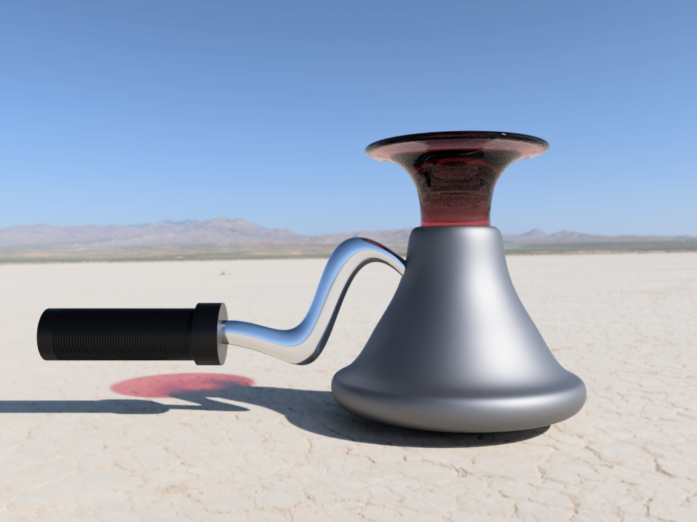Link to Model
3D Print
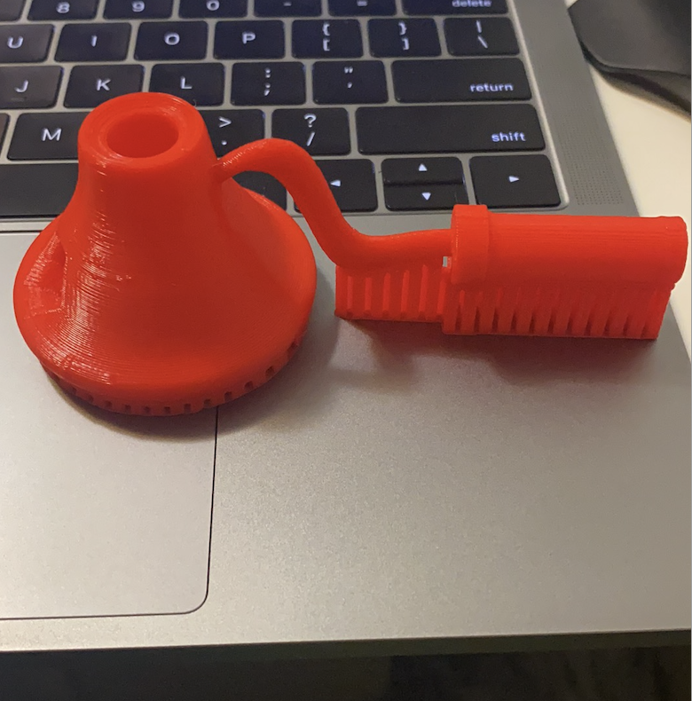 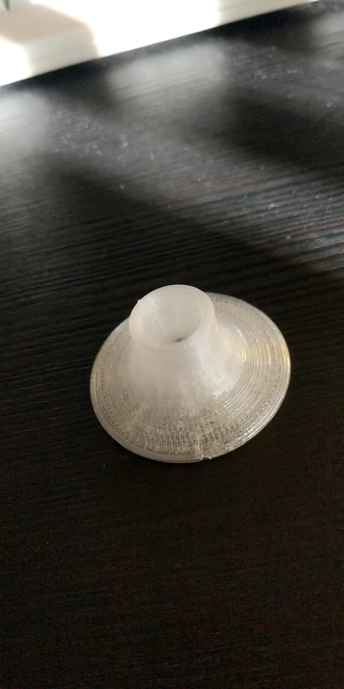